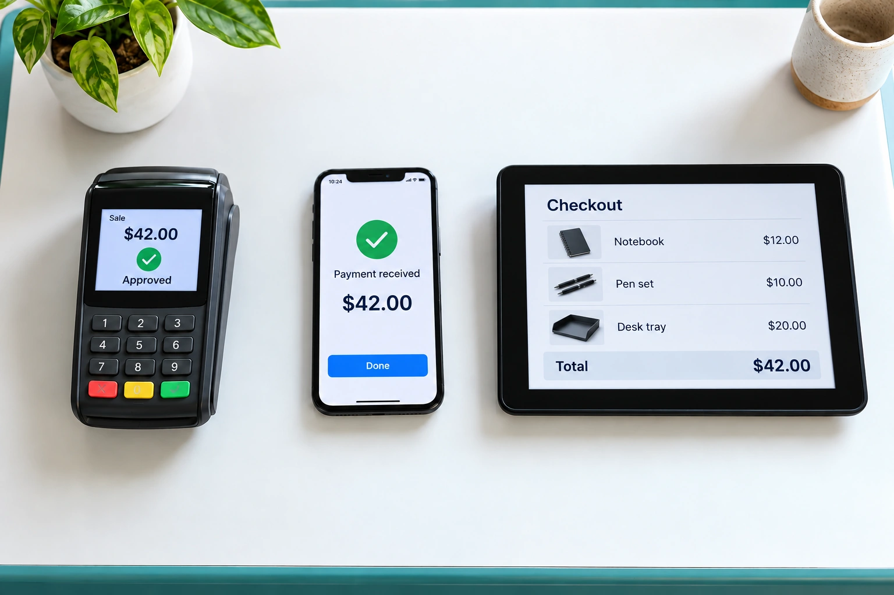

Income & Expense Tracking
Track Income Beyond the Deposits in Your Bank Account
ReadBusiness Expenses Worth Tracking Consistently
Read
Record Cash Payments Alongside Your Other Sales
ReadUnderstand Why Expenses Rise Alongside Sales
ReadFind Recurring Charges Your Business No Longer Needs
Read